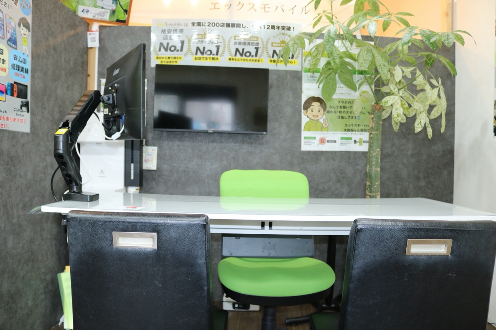
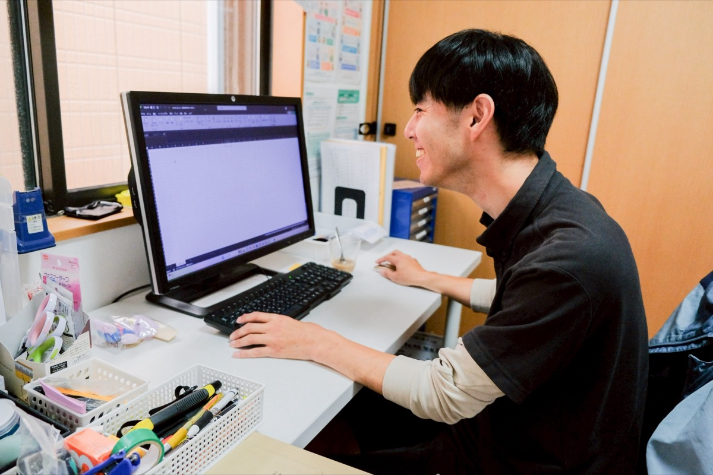

ニューバリーは、訪問介護から児童福祉、相談支援まで複数の事業を展開。一人ひとりのライフステージに合わせて、切れ目のない支援を届けます。
住み慣れた自宅で安心して暮らせるよう、身体介護や生活援助を提供。一人ひとりの「こうしたい」に寄り添い、自立した毎日を支えます。
障害のある子どもたちの「やってみたい」を応援。遊びや学び、お友だちとの関わりを通して、放課後の時間と成長を支えます。
子どもたちの可能性を、その先（beyond）へ。一人ひとりの特性に合わせた療育プログラムで、できることを少しずつ広げていきます。
福祉サービスの利用計画づくりから日々の生活のご相談まで。ご本人とご家族の伴走者として、必要な支援へとつなぎます。
日中の活動の場から暮らしの場まで。地域でのくらしを、もっと幅広く支えていきます。

地域密着型の携帯ショップ。通信のお悩みを丁寧にサポートします。

課題を見つけ、仕組みで解決する。未来をつくるパートナーに。